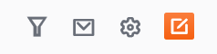
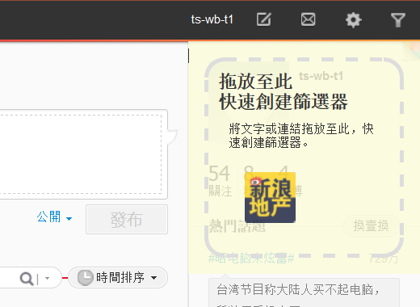
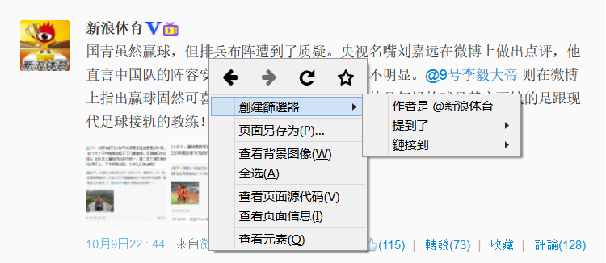
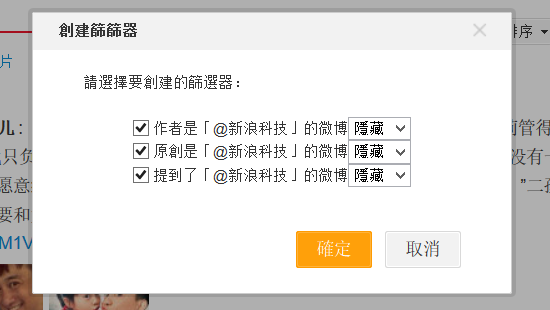

安裝說明
對不起，腳本當前不支援您使用的瀏覽器。請考慮選擇以下幾個支持的瀏覽器之一。
如果您已經安裝了以上擴充功能，點此安裝本腳本，在打開的頁面中確認腳本安裝。
設定腳本
安裝成功後，到新浪微博的頁面點擊右上角的漏斗圖示即可進入腳本設定。
想要簡化介面又不想仔細研究腳本設置？試試導入這個示例腳本設置吧。下載這個檔案，在設置視窗中點選腳本選項卡，點擊導入打開該檔即可快速設置篩選器。
此外還有為您準備好的黑名單可供訂閱，您可以來YAWF 篩選規則訂閱（簡體）頁面看看。
主要功能
- 根據關鍵字、作者、來源等隱藏、折疊或高亮微博；使用拖拽輕鬆定義篩選規則；
- 屏蔽推廣、粉絲頭條、投票、好友贊過、搶紅包、愛問醫生等各種微博；防洗版、版聊；
- 自動載入和篩選新微博，白名單新微博桌面提示；禁用首頁下方的延遲載入；
- 清理版面上的各種模組、圖示、小紅點，去廣告；篩選熱門話題；使用方形頭像；
- 合併左右邊欄的雙欄模式，加寬微博寬度；自訂微博字型、大小；
- 去除微博間的空白，縮小微博下操作按鈕距離，重新安排他們的順序；
- 自動檢查首頁上是否遺漏了特定使用者的最新微博，不錯過他的任何一條消息；
- 展開左欄消息分組；讓各種浮動的模組回到原位；統一各種頁面的邊欄位置；
- 查看原圖，展開 t.cn 短網址；清除發佈框預設話題，禁止自動關注話題主持人；
- 微博作者和正文不拆行；按字數自動展開或隱藏長篇幅的微博，禁用微博換行；
- 設置網頁範本，自訂半透明背景色，深色導覽列，經典導覽列佈局；
- 方便的新功能更新提醒；設置備份，以及在導入時提示設置最新功能；
- 使用本機時區顯示微博上的各種時間（針對非東八區用戶）；
- 正常大小的微博縮略圖尺寸，顯示在微博下面的發佈時間和來源（針對2016新版）；
腳本安裝後大部分功能不會預設啟用，您需要到腳本設置中啟用對應功能。
完整功能清單
列表僅供參考，您安裝腳本後，可能顯示的功能和以下略有不同。清單可能會隨您的作業系統和瀏覽器的設置和版本不同有細微差別。
詳細說明
除了在設置介面添加關鍵字、帳號、來源、連結的篩選器外，您還可以使用拖拽或右鍵功能表快速創建篩選器。
將您要隱藏、折疊或高亮的內容使用滑鼠拖動，即可在右上角看到一個黃底的拖放區域，將對應內容拖放到該區域內鬆開滑鼠，根據彈出的對話方塊選擇即可快速創建篩選器。
在微博上點擊右鍵，可以在功能表中找到快速創建過濾器的相關選項。（右鍵菜單功能僅支持Mozilla Firefox 瀏覽器）
 如果您之前使用眼不見心不煩腳本，您可以使用設置轉換工具將該腳本的設置導入到本腳本中。
關於詳細的使用指引，請參見常見問題（簡體）。
私隱權政策
資訊收集
腳本不會以任何方式收集您的任何個人資訊。但您使用腳本過程中產生的網路訪問可能會被您的網路提供商以及對應網站所記錄。
網路訪問
腳本的網路訪問限於訪問新浪網的相關介面，限於獲取或傳輸以下資料：
- 您在設置中選擇隱藏、折疊、顯示的帳號的資訊；
- 如果您要求使用 HTML5 播放器替換 Flash 播放器，腳本會從新浪的伺服器獲取 MP4 檔的地址；
- 如果您要求檢查是否有哪些特定帳號的微博沒有顯示在首頁上，腳本會自動每隔一段時間訪問對應用戶的個人主頁；
- 如果您要求自動展開長篇幅微博，腳本在遇到此類微博時，會自動從微博的網站上獲取微博全文。
本機存放區
腳本會存儲您的設置等相關資訊到瀏覽器設定檔中，具體包括：
- 腳本設置的隱藏、折疊或顯示的使用者編號、昵稱，您的帳號編號，您隱藏的微博的編號，及其他設置項；
- 如果您開啟了桌面提示功能，腳本還會記錄最近20條顯示桌面提示的微博的編號；
- 如果您開啟了表情輸入的協助工具，腳本還會記錄您最近使用的表情和置頂的表情；
- 如果您開啟了檢查首頁是否有缺失微博的功能，腳本還會記錄您最近在首頁看到過哪些微博，這些帳號最近發了哪些微博以及您看到了哪裡；
- 如果您開啟了自動展開長篇幅微博的功能，腳本會將最近遇到的若干條此類微博的長度和全文存儲在本地以方便下次遇到時直接展開。
任何該電腦的使用者都可以讀寫該設定檔，所以建議不要在公共電腦上使用。
其他
腳本不會以您的身份發佈任何微博或消息。
如果您使用腳本的匯出設置的功能，匯出的檔以未加密的方式保存了您對腳本的所有設定，其中可能包括您的相關個人資訊，請勿隨意傳播給他人。